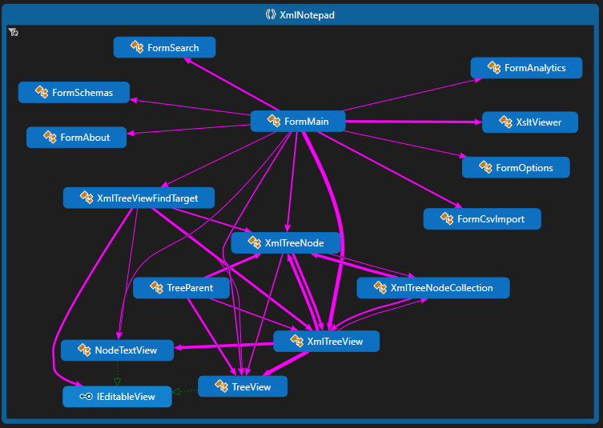
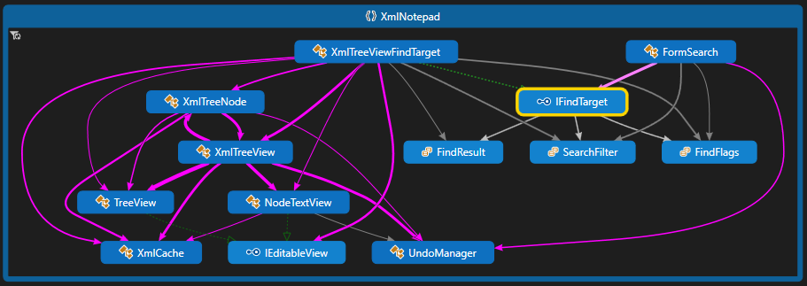
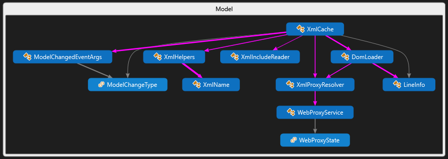
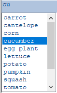
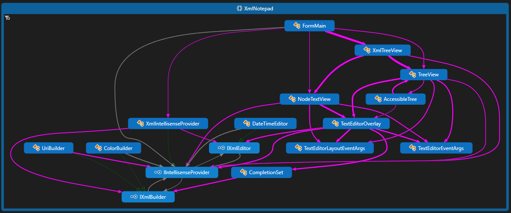
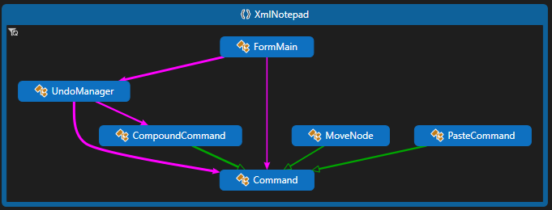
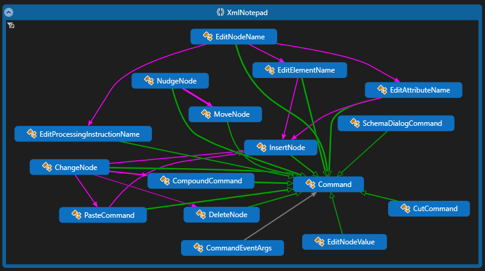

XML Notepad Design#
By Chris Lovett, Microsoft
In the GitHub repo, you'll find the core XmlNotepad DLL project, an Application project that builds XmlNotepad.exe,
and some setup projects like XmlNotepadSetup which builds the .msi installer, and the UnitTests project for testing
XML Notepad.
The following DGML diagram shows the relationships between the main UI classes. The main form contains all the UI elements from the TaskList to the main XmlTreeView with Resizers in between; it's the launching point for the dialogs such as FormSearch, FormSchemas, FormOption, and FormAbout.

The main tab control contains the XmlTreeView and the XsltViewer for showing XSL output. The XmlTreeView contains a TreeView on the left and a NodeTextView on the right and coordinates scrolling between these two views. Both the TreeView and NodeTextView provide the same IntelliSense editing functionality using a TextEditorOverlay component. The XmlTreeView implements IFindTarget, which is used by the Find dialog (FormSearch) to implement find/replace functionality.

The Find dialog supports full text, regex, or XPath expressions and can filter by names or values.
Model#
The core data model behind the UI is System.Xml.XmlDocument and its XmlNode objects. These nodes are wrapped by
TreeNode UI objects. To facilitate support for the XML Include spec, there is a custom reader that processes XML
Includes, and there is also a custom DomLoader that keeps track of line information for error messages.

Validation, IntelliSense, and Custom Editors#
The biggest new feature is IntelliSense, which is driven by XML Schema information provided via the SchemaCache. For example, if your element or attribute is defined by an XSD simpleType and this simpleType contains a list of enumeration facets, then you will get a drop-down like this:

The way this works is that the Checker runs after each edit operation to validate the document and report errors in the
TaskList. This process also puts System.Xml.Schema.XmlSchemaType information on each element and attribute in the
XmlDocument; then, when editing the value of that node, the TextEditorOverlay uses the XmlIntelliSenseProvider to get
back a list of possible values. In the above example, it returns the values from the simpleType enumeration facets. For
element name IntelliSense in the tree view, the XmlIntelliSenseProvider invokes the Checker again, captures
GetExpectedParticles and GetExpectedAttributes on the System.Xml.Schema.XmlSchemaValidator, and uses that to provide
IntelliSense.

The TextEditorOverlay also supports custom editors like the DateTimeEditor or the UriBuilder or ColorBuilder.
There are two types of custom editors: IXmlEditors, which are inline editors that replace the default TextBox, and
IXmlBuilders, which are popup dialogs like the OpenFileDialog or ColorDialog. The type of editor is derived from the
schema type information — "xs:date", "xs:time", "xs:datetime" results in the DateTimeEditor, and "xs:anyURI" results in
the UriBuilder. You can also annotate the schema with a custom "vs:builder" attribute in the
http://schemas.microsoft.com/Visual-Studio-IntelliSense namespace. See the Help content for more information.
Infinite Undo/Redo#
To implement undo/redo, XML Notepad follows a common design pattern of Command objects with Undo and Redo methods.
Commands operate on both a TreeNode and an XmlNode because some commands like InsertNode don't have an XmlNode
yet until they are performed, but the command needs to know where in the tree this new node will be inserted and during
Undo where it should be removed. The UndoManager collects these in a list. Then the state of the UndoManager controls
the enabled/disabled state of the Undo/Redo MenuItems. When the user selects the Undo menu item, the Undo method is
called on the active command, and that command is pushed onto the Redo stack.

Some operations in the editor cause many edits in the tree, including the replace-all operation and editing the value of
a namespace attribute. (When you change the value of a namespace attribute, every XmlNode bound to that namespace needs
to be reconstructed with a new namespace URI, which can obviously affect a lot of nodes in the tree!) So, to make these
operations one atomic undo operation, there is a CompoundCommand object that contains a list of smaller edit commands,
and this CompoundCommand is put into the UndoManager.
Other simpler command objects include the following, which all operate on XmlTreeNode and XmlNode objects:

The PasteCommand is special because it takes random XML text off the clipboard and parses it in the context of the currently selected element in the tree, inheriting the namespaces in scope. The helper class TreeData uses the special XmlTextReader constructor that takes an XmlParserContext as input.
Accessibility#
In order to make testing possible using System.Windows.Automation, there are some custom AccessibleObject
implementations inside the TreeView and NodeTextView. See AccessibleNode and AccessibleNodeTextViewNode. These
accessibility classes should also make Windows accessibility features work better with those custom views.
Missing Documentation?#
If you want more detailed documentation on some aspect of XML Notepad, please create a new GitHub issue.